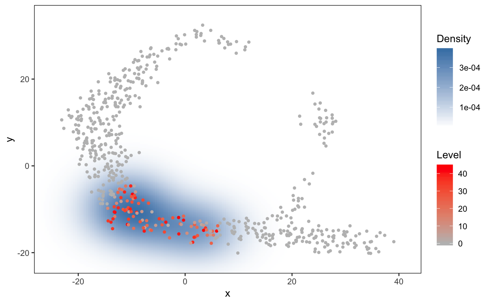

haystack_2D.RdThe main Haystack function, for 2-dimensional spaces.
haystack_2D(x, y, detection, use.advanced.sampling = NULL, dir.randomization = NULL)
| x | x-axis coordinates of cells in a 2D representation (e.g. resulting from PCA or t-SNE) |
|---|---|
| y | y-axis coordinates of cells in a 2D representation |
| detection | A logical matrix showing which genes (rows) are detected in which cells (columns) |
| use.advanced.sampling | If NULL naive sampling is used. If a vector is given (of length = no. of cells) sampling is done according to the values in the vector. |
| dir.randomization | If NULL, no output is made about the random sampling step. If not NULL, files related to the randomizations are printed to this directory. |
An object of class "haystack"
# using the toy example of the singleCellHaystack package # define a logical matrix with detection of each gene (rows) in each cell (columns) dat.detection <- dat.expression > 1 # running haystack in default mode res <- haystack(dat.tsne, detection=dat.detection, method = "2D")#>#>#>#>#>#>#>#>#>#>#>#> D_KL log.p.vals T.counts #> gene_79 1.929800 -20.39882 68 #> gene_242 1.360661 -19.81458 96 #> gene_317 1.386194 -19.34307 94 #> gene_275 1.345251 -19.31956 95 #> gene_497 1.599646 -19.27905 86 #> gene_24 1.857497 -18.82686 59 #> gene_244 1.238011 -18.35909 95 #> gene_351 1.408946 -18.31724 89 #> gene_71 1.868822 -18.24264 56 #> gene_62 1.519993 -18.20658 81# plot one of the genes plot_gene_haystack(dat.tsne, expression=dat.expression, gene="gene_242", detection = dat.detection, high.resolution = TRUE)# to running haystack in advanced mode, first get number of genes detected in each cell count.detected <- apply(dat.detection,2,sum) # give count of detected genes as input to parameter use.advanced.sampling res.adv <- haystack(dat.tsne, detection=dat.detection, use.advanced.sampling = count.detected, method = "2D")#>#>#>#>#>#>#>#>#>#>#>#> D_KL log.p.vals T.counts #> gene_497 1.608896 -22.93033 86 #> gene_242 1.378709 -22.73744 96 #> gene_317 1.365825 -22.45479 94 #> gene_275 1.273792 -21.59734 95 #> gene_244 1.272210 -21.58055 95 #> gene_351 1.327998 -21.16135 89 #> gene_137 1.312863 -21.00860 89 #> gene_339 1.325922 -20.62281 87 #> gene_61 1.506420 -20.08434 80 #> gene_62 1.441692 -19.85820 81